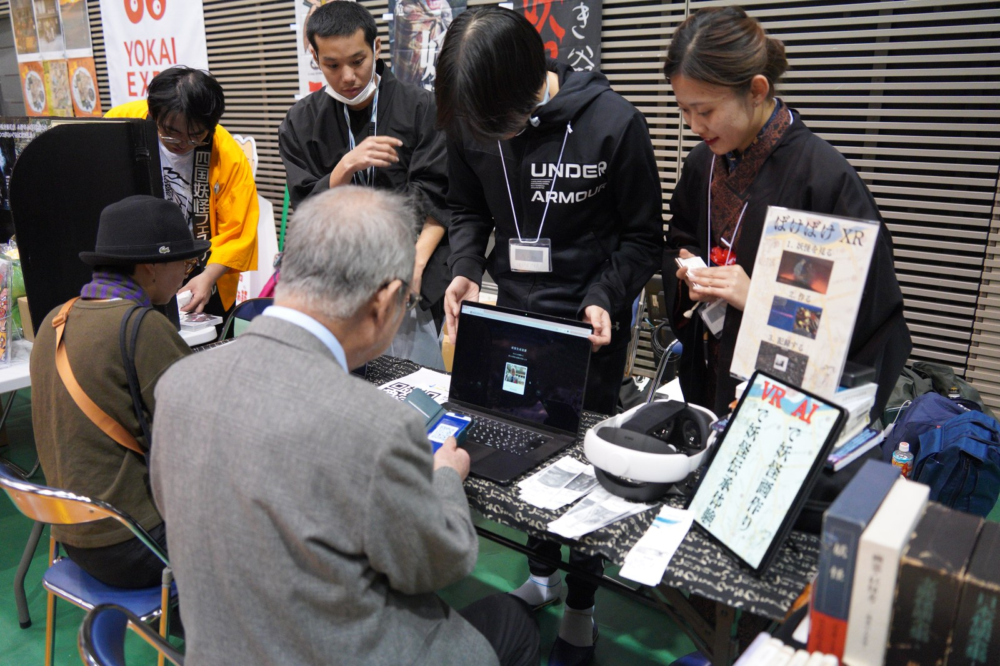
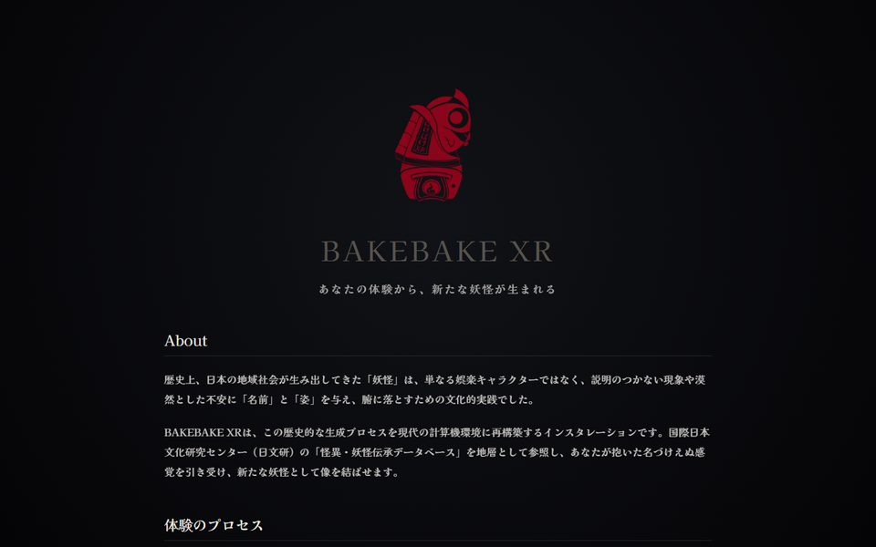

Projects / 研究
Project BAKEBAKE
妖怪伝承アーカイブと生成AI

Project BAKEBAKEは、妖怪伝承を二つの方向から扱う研究プロジェクトです。一つは、国際日本文化研究センター（日文研）の「怪異・妖怪伝承データベース」に収められた3万5千件を超える記録を計算論的に分析し、伝承の分布や偏り、類型を読み直す研究です。もう一つは、現代の人が説明のつかない体験や言葉にしにくい違和感に名前と姿を与え、外から眺められるようにするためのインターフェースとして妖怪を用いる装置の制作と展示です。
アーカイブ分析では、短い伝承要旨に含まれる場所の情報を、記録が裏づける以上の精度を持たせずに地図上で表す方法を検討し、FOSS4G 2026のAcademic Track（ISPRS Archives）で発表しました。生成装置では、来場者が語った体験をデータベースと照合し、生成AIが名前・語り・図像の候補を提案します。来場者はそれを選び、直し、あるいは棄却し、できあがった妖怪は感熱紙に印字されます。装置は2026年2月から5月にかけて小豆島の妖怪EXPO 2026で展示し、その内容をHAI 2026とSIGGRAPH Asia 2026 Art Papersで発表します。
メンバーは筑波大学と日本女子大学を拠点とする清水紘輔、一倉弘毅、池辺莉々、干川未来の4名で、日本財団HUMAIプログラムの支援を受けて活動しています。清水は生成装置の実装と実験設計を担当しています。
デモ
構成
-
01
妖怪の地理
妖怪伝承アーカイブの場所情報を解像度に応じて表す
伝承記録の多くは県単位の範囲しか示さず、要旨には地名と川や道、墓などの記述が混在します。日文研データベースの33,378件について、行政域の支持範囲、地名候補、場所の記述、根拠の出所を表示用の代表点と分けて保持する表現を作りました。市町村まで絞れた1,231件では、支持範囲の面積が県に比べ中央値で97.5%縮小しました。河童の記録が大きな水域に近いという仮説は支持されませんでした。
- 2026.08ProceedingsFrom Point Anchors to Geospatial Support: A Resolution-Aware Representation of Toponymic and Non-Toponymic Place Evidence in a Japanese Yokai ArchiveKosuke Shimizu, Hiroki Ichikura, Riri Ikebe, Mirai HoshikawaISPRS Archives L-4/W1-2026, pp. 283–290 · DOI 10.5194/isprs-archives-l-4-w1-2026-283-2026
-
02
BAKEBAKE XR Generator
体験から妖怪をつくるインスタレーション「ばけばけ発生器」
来場者の体験から数分で妖怪をつくるインスタレーションです。体験を入力すると、日文研の伝承データベースから似た記録を探し、名前と語り、水墨画や浮世絵など五つの画風による図像の候補を提案します。来場者が選び、手を加えた妖怪は、やがて消える感熱紙に印字されます。小豆島の妖怪EXPO 2026では、職場やインフラにまつわる、データベースに前例のない妖怪も生まれました。
- 2026.11Poster & DemoBAKEBAKE: Making Ambiguous Experiences Visible through Generative YokaiKosuke Shimizu, Riri Ikebe, Hiroki Ichikura, Mirai HoshikawaHAI 2026 Poster & Demo Track掲載予定 · DOI 10.1145/3841580.3845680
- 2026.12Art PaperNaming the Inexplicable: A Generative Apparatus for Rehearsing Yokai-Making in Compressed Communal TimeKosuke Shimizu, Riri Ikebe, Hiroki Ichikura, Mirai HoshikawaSIGGRAPH Asia 2026 Art Papers (Long)掲載予定 · DOI 10.1145/3829215.3843681
